인터넷정보관리사-2급 (2019-03-16 기출문제)
1과목: 인터넷의 이해
1. 다음 중 인터넷에 대한 설명으로 잘못된 것은?
- 상업적 용도로 많이 사용하고 있다.
- 국가 전산망에는 활용되지 않는다.
- 인터넷을 통제하는 어떠한 중앙 통제 기구도 없다.
- 주소만 알면 누구나 사용 가능한 개방형 네트워크 구조이다.
(정답률: 77%)

2. 다음 중 인터넷 기술 발전 순서대로 나열한 것은?
- TCP/IP - ARPANET - DNS - WWW
- ARPANET - TCP/IP - WWW - DNS
- ARPANET - TCP/IP - DNS - WWW
- TCP/IP - ARPANET - WWW - DNS
(정답률: 84%)
3. 다음 설명의 괄호 안에 적합한 용어로 짝지어진것은?
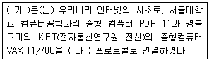
- 가 - SDN 나 - TCP/IP
- 가 - KT 나 - SDN
- 가 - SDN 나 - HTTP
- 가 - ARPANET 나 - TCP/IP
(정답률: 67%)
4. 인터넷 관련 문서 중 인터넷 분야별로 초보자를 위한 질문과 답을 정리한 것을 무엇이라 하는가?
- RFC
- IMR
- FAQ
- QNA
(정답률: 70%)
5. 인터넷의 기본적인 서비스 WWW의 의미는 무엇인가?
- Wide Window World
- World Wide Web
- Wide Window Web
- World Wide Window
(정답률: 82%)
6. 다음 중 인터넷 연결을 위한 표준 프로토콜은 무엇인가?
- HTTP
- FTP
- TCP/IP
- UDP
(정답률: 67%)
7. 다음 중 OSI 7계층과 TCP/IP 프로토콜의 대응 관계가 잘못 짝지어진 것은?
- 물리 계층 : 링크 계층
- 네트워크 계층 : 네트워크 계층
- 세션 계층 : 전송 계층
- 데이터링크 계층 : 링크 계층
(정답률: 53%)
8. 다음 중 전자상거래의 일반적인 특징으로 잘못된것은?
- 개인 정보 누출 우려가 있음
- 중개인의 역할이 확대됨
- 상품의 가격이 낮아짐
- 유통 채널이 단순화됨
(정답률: 55%)
9. 다음 중 잘 알려진 포트 번호와 서비스가 잘못 연결된 것은?
- 21 - FTP
- 53 - DNS
- 25 - SMTP
- 110 - HTTP
(정답률: 66%)
10. 다음 중 OSI 7계층의 하위 계층이 아닌 것은?
- 전송 계층
- 물리 계층
- 데이터링크 계층
- 네트워크 계층
(정답률: 61%)
11. 다음에서 설명하는 전자 우편 에러 메시지는 무엇인가?
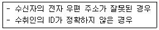
- Host Unknown
- Connection Refused
- Sender Blocked
- User Unknown
(정답률: 67%)
12. 소셜 미디어의 형태별 특징에 대한 설명으로 잘못된 것은?
- 블로그 : 글자 수에 제한 받지 않으며 검색을 통한 강한 전파력을 가짐
- 위키디피아 : 개방성, 목적성, 현재성을 가짐
- 소셜 네트워크 : 단문을 주고받는 서비스이므로 전파 범위는 좁고 강한 휘발성을 가짐
- UCC : 전문가가 아닌 일반인들의 정보 생산이며 정보 전달에 큰 효과가 있음
(정답률: 61%)
13. 기존의 웹 사이트를 소셜 네트워크 서비스와 연동하여 마케팅 플랫폼으로 활용하는 기법을 무엇이라 하는가?
- 오픈 그래프
- 오픈 마케팅
- UCC
- 오픈 미디어
(정답률: 47%)
14. 소셜 미디어의 장단점에 대한 설명으로 잘못된것은?
- 제도적인 통제 수단이 많다.
- 음란물 여과가 쉽지 않다.
- 콘텐츠의 전파 속도가 빠르고 공유가 가능하다.
- 기관의 대표성을 갖는 공지 성격의 정보를 전파할 수 있다.
(정답률: 71%)
15. 다음 중 클라우드 컴퓨팅 서비스 유형이 아닌것은?
- SaaS
- PaaS
- IaaS
- MaaS
(정답률: 64%)
16. 채팅에서 자신을 대신하여 대화에 참여하는 가상의 인물이나 그림을 무엇이라 하는가?
- 아이콘
- 아바타
- 캐릭터
- 이모티콘
(정답률: 80%)
17. 다음 중 국내에서 개발된 메신저는 무엇인가?
- 챗온(Ch@t On) 메신저
- ICQ 메신저
- AOL 메신저
- MSN 메신저
(정답률: 72%)
18. 다음은 저작권법에 대한 설명으로 괄호 안에 적합한 용어는 무엇인가?
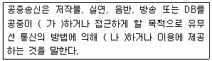
- 가 – 송신 나 - 송신
- 가 – 송신 나 - 수신
- 가 – 수신 나 - 송신
- 가 – 수신 나 - 수신
(정답률: 53%)
19. 개인정보 보호법에서 업무상 알게 된 개인정보를 누설하거나 권한 없이 다른 사람이 이용하도록 제공하는 행위에 대한 벌칙에 해당하는 것은?
- 5년 이하의 징역 또는 5천만원 이하의 벌금
- 3년 이하의 징역 또는 5천만원 이하의 벌금
- 5년 이하의 징역 또는 3천만원 이하의 벌금
- 3년 이하의 징역 또는 3천만원 이하의 벌금
(정답률: 47%)
20. 개인 정보 관리 책임자를 의미하는 용어는 무엇인가?
- CTO
- CIO
- CPO
- CSO
(정답률: 60%)
21. 다음의 개인 정보 종류 중 신용 정보 유형에 해당하지 않는 것은?
- 저당
- 신용 카드
- 임금 압류 통보에 대한 기록
- 봉급 경력
(정답률: 60%)
22. 다음의 개인 정보 종류 중 그 성격이 다른 하나는 무엇인가?
- 지문
- 출생지
- 홍채
- 신장
(정답률: 70%)
23. 저작권법에서 저작물을 창작한 자를 무엇이라 하는가?
- 저작자
- 창작자
- 생성자
- 실연자
(정답률: 73%)
24. 다음 중 중앙처리장치에 대한 설명으로 잘못된것은?
- 연산장치는 사칙 연산과 논리 연산을 수행한다.
- CU(Control Unit)는 명령어를 순서대로 실행하도록 제어한다.
- 프로그램 카운터는 실행할 명령어를 저장하고 관리한다.
- 명령 레지스터는 현재 실행 중인 명령어를 기억한다.
(정답률: 44%)
25. 다음 중 자외선을 이용하여 저장된 정보를 새로운 정보로 기록할 수 있는 것은?
- PROM
- Mask ROM
- EPROM
- EEPROM
(정답률: 65%)
26. 다음 기억장치 중 보조기억장치에 해당하지않는 것은?
- 광디스크
- 자기테이프
- 하드디스크
- RAM
(정답률: 54%)
27. 다음 중 입력 장치만으로 구성된 것이 아닌것은?
- 키보드, 조이스틱
- 스캐너, 디지타이저
- 디지타이저, 플로터
- 터치패드, 마우스
(정답률: 58%)
28. 다음 중 사무자동화(OA)용 소프트웨어의 종류가 아닌 것은?
- 워드프로세서
- 데이터베이스
- 스프레드시트
- 그래픽 소프트웨어
(정답률: 57%)
29. ISDN 채널의 종류별 전송 속도가 잘못된 것은?
- B채널 : 64Kbps
- D채널 : 128Kbps
- H0채널 : 384Kbps
- H11채널 : 1.536Mbps
(정답률: 28%)
30. 네트워크 토폴로지 중에서 각 노드들이 시스템 내의 다른 모든 노드와 직접 연결되고 많은 양의 통신에 유리한 것은?
- 성형
- 망형
- 버스형
- 트리형
(정답률: 61%)
31. IEEE 802.11 기반의 무선 접속 장치가 설치된 곳에서 전파나 적외선 전송 방식을 이용하는 무선 인터넷 서비스를 하는 근거리 무선 랜 기술은 무엇인가?
- WiFi
- WiBro
- 블루투스
- LTE
(정답률: 62%)
32. 모든 노드가 하나의 중앙 사이트에 직접 연결되는 구조를 갖는 네트워크 토폴로지는 무엇인가?
- 성형
- 트리형
- 버스형
- 망형
(정답률: 59%)
33. 다음 전용 회선의 종류 중 속도가 가장 빠른 것은?
- T1
- T2
- T3
- E1
(정답률: 55%)
2과목: 인터넷 자원 탐색
34. 웹 브라우저의 개념에 대한 올바른 설명을 고른 것은?
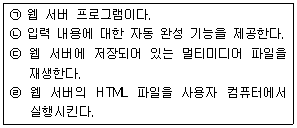
- ㉠, ㉡
- ㉡, ㉢
- ㉡, ㉣
- ㉢, ㉣
(정답률: 34%)
35. 웹 브라우저에 대한 올바른 설명을 고른 것은?
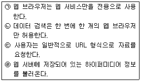
- ㉠, ㉡
- ㉠, ㉣
- ㉡, ㉢
- ㉢, ㉣
(정답률: 61%)
36. 웹 브라우저가 지원하는 다양한 표준 중 그 특성이 다른 하나는?
- CSS
- XML
- HTTPS
- XHTML
(정답률: 46%)
37. 웹 브라우저가 인터넷에 연결된 웹 서버에서 불러오는 정보를 고른 것은?
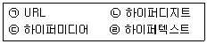
- ㉠, ㉡
- ㉠, ㉣
- ㉡, ㉢
- ㉢, ㉣
(정답률: 45%)
38. 다음 설명에 해당하는 웹 브라우저는?
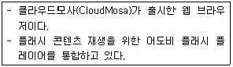
- Whale
- Firefox
- Puffin
- Safari
(정답률: 44%)
39. 다음 설명에 해당하는 모바일 브라우저는?
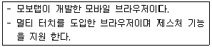
- 네이버 웨일
- 오페라 모바일
- 돌핀 브라우저
- 마이크로소프트 엣지
(정답률: 48%)
40. 텍스트 기반의 웹 브라우저를 고른 것은?
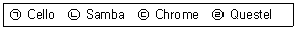
- ㉠, ㉡
- ㉡, ㉢
- ㉡, ㉣
- ㉢, ㉣
(정답률: 49%)
41. 구글 크롬의 올바른 특징을 설명한 것으로 옳은 것은?
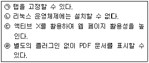
- ㉠, ㉡
- ㉠, ㉣
- ㉡, ㉢
- ㉢, ㉣
(정답률: 59%)
42. 다음 설명에 해당하는 웹 브라우저는?
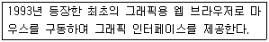
- 모자익
- 핫자바
- 아라크네
- 파이어폭스
(정답률: 49%)
43. Firefox의 '사생활 보호 브라우징' 시 저장하지 않는 내용을 고른 것은?
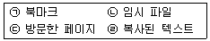
- ㉠, ㉡
- ㉠, ㉣
- ㉡, ㉢
- ㉢, ㉣
(정답률: 52%)
44. 크롬 브라우저에서 '샌드박스 처리되지 않는 플러그인 액세스'를 설정할 수 있는 메뉴는?
- 인증서 관리
- 콘텐츠 설정
- 세이프 브라우징
- 인터넷 사용 기록 삭제
(정답률: 36%)
45. 익스플로러에서 웹 페이지의 화면을 '100%로 확대/축소' 하기 위한 단축키는?
- <Ctrl> + <0>
- <Ctrl> + <Home>
- <Ctrl> + <->
- <Ctrl> + <+>
(정답률: 50%)
46. 다음은 검색 엔진의 로봇이 해당 웹 페이지에 접근하여 인덱스하는 것을 허락하지 않기 위한 메타태그이다. ㉠과 ㉡ 에 들어갈 표현으로 옳은 것은?
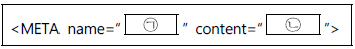
- index robots
- robots index
- robots noindex
- noindex robots
(정답률: 49%)
47. 검색 엔진에 대한 올바른 설명을 고른 것은?
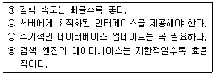
- ㉠, ㉡
- ㉠, ㉢
- ㉡, ㉣
- ㉢, ㉣
(정답률: 49%)
48. 로봇 배제 표준에 대한 올바른 설명을 고른 것은?
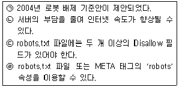
- ㉠, ㉡
- ㉡, ㉢
- ㉡, ㉣
- ㉢, ㉣
(정답률: 48%)
49. 검색 엔진의 구성 요소 중 다음과 가장 관련이 있는 것은?
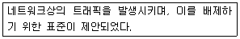
- 로봇
- 색인기
- 데이터베이스
- 검색 엔진 소프트웨어
(정답률: 54%)
50. robots.txt 파일의 내용이 다음과 같을 때 이에 대한 설명으로 옳은 것은?
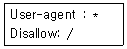
- * 로봇의 접근을 배제한다.
- 모든 문서에 접근을 배제한다.
- 모든 문서에 접근을 허용한다.
- /tmp 경로는 접근할 수 있다.
(정답률: 58%)
51. 다음 사례에서 괄호 안에 들어갈 용어로 가장 적절한 것은?
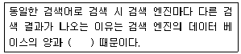
- 로봇의 전략
- 검색 PC의 성능
- 사용자의 접근성
- 데이터베이스의 전략
(정답률: 48%)
52. 다음 설명과 가장 관련이 있는 검색 엔진은?
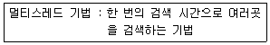
- 메타 검색 엔진
- 단어별 검색 엔진
- 주제별 검색 엔진
- 하이브리드 검색 엔진
(정답률: 48%)
53. 매뉴얼 인덱스 방식에 대한 설명으로 옳은 것은?
- 디렉터리 검색 엔진과 관련이 있다.
- 로봇이 주기적으로 돌아다니면서 정보를 수집한다.
- 웹 사이트를 사용하는 사용자가 등록하는 방식이다.
- 에이전트 방식에 비해 상대적으로 정보의 질이 낮다.
(정답률: 28%)
54. 다음 괄호 안에 들어갈 용어로 가장 적절한 것은?
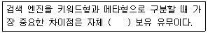
- 로봇
- 검색 엔진
- 데이터베이스
- 검색 소프트웨어
(정답률: 53%)
55. 주제별 디렉터리 서비스와 키워드 검색 서비스를 동시에 제공하는 검색 엔진은?
- 메타 검색 엔진
- 지능형 검색 엔진
- 멀티스레드 검색 엔진
- 하이브리드 검색 엔진
(정답률: 51%)
56. '양보다는 질'이라는 표현을 적용하기에 적절한 검색 엔진의 구축 방식은?
- 매뉴얼 인덱스 방식
- 키워드 인덱스 방식
- 에이전트 인덱스 방식
- 하이퍼미디어 인덱스 방식
(정답률: 44%)
57. 다음과 같은 장점을 갖는 검색 엔진은?
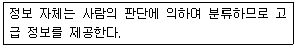
- 로봇 검색 엔진
- 단어별 검색 엔진
- 주제별 검색 엔진
- 키워드 검색 엔진
(정답률: 45%)
58. 정보 검색의 단계별 발전 모델에서 '2단계 디렉터리 검색' 의 특징을 고른 것은?
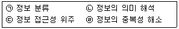
- ㉠, ㉡
- ㉠, ㉣
- ㉡, ㉢
- ㉢, ㉣
(정답률: 36%)
59. 트위터를 이용해 다음과 같이 검색하였을 때 예상되는 결과로 옳은 것은?
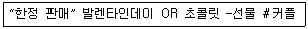
- 해시태그 '커플'을 포함
- '선물'과 '커플' 은 포함하지 않음.
- '발렌타인데이'와 '초콜릿' 단어를 모두 포함
- '한정 판매'라는 단어 중 일부 글자라고 포함
(정답률: 55%)
60. 시소러스(Thesaurus)에 대한 올바른 설명을 고른 것은?
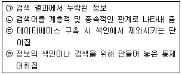
- ㉠, ㉡
- ㉡, ㉢
- ㉡, ㉣
- ㉢, ㉣
(정답률: 47%)
61. 다음 조건에 적절한 트위터 검색어는?
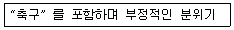
- 축구:(
- 축구;)
- -축구:(
- :( and 축구
(정답률: 48%)
62. 비공식 사이트 제공처를 고른 것은?
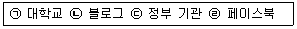
- ㉠, ㉡
- ㉡, ㉢
- ㉡, ㉣
- ㉢, ㉣
(정답률: 62%)
63. 효과적인 정보 검색 방법을 고른 것은?
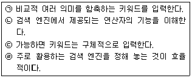
- ㉠, ㉡
- ㉠, ㉣
- ㉡, ㉢
- ㉢, ㉣
(정답률: 60%)
64. 다음 중 올바른 정보 검색 기본 원칙은?
- 검색 엔진을 통해 인터넷 상의 모든 정보를 찾을 수 있다.
- 검색 대상에 대한 기초 지식과 범위 설정은 중요치 않다.
- 리키지를 최대화할수록 효율적인 정보 검색을 할 수 있다.
- 검색한 정보에 대한 출처와 사용 권한에 대해 주의해야 한다.
(정답률: 66%)
65. 다음 중 영어 또는 한글에서의 정보 검색 시 불용어가 아닌 것은?
- 어미
- 명사
- 전치사
- 접속사
(정답률: 48%)
66. 다음 설명에 해당하는 정보 관리(검색)사의 역할은?
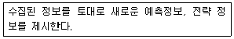
- 정보 전문가
- 정보 중개인
- 정보 컨설턴트
- 정보의 균등 분배자
(정답률: 64%)
3과목: 인터넷 윤리
67. 다음 인터넷 역기능 중 역기능 항목의 유형이 다른 것은?
- 음란물 유포
- 불법 사이트
- 개인 정보 침해
- 청소년 유해 매체
(정답률: 57%)
68. 다음에서 설명하는 리차드 루빈이 제시한 정보통신 기술의 유혹 요인은?
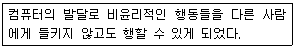
- 속도
- 파괴력
- 프라이버시와 익명성
- 최소 투자에 대한 최대 효과
(정답률: 67%)
69. 다음 중 인터넷 윤리의 기능으로 변혁 윤리에 대한 설명은?
- 인터넷과 관련된 인간의 책임을 강조한다.
- 인터넷을 이용할 때 해야 할 것과 해서는 안 되는 것을 규정해 준다.
- 지구상의 모든 구성원들이 따라야 할 보편적인 규범 체계를 제시한다.
- 인터넷이 수반하고 있는 역기능에 대비해 인간의 제도나 정책이 변화해야 함을 강조한다.
(정답률: 54%)
70. 다음에서 설명하는 현상은?
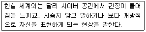
- 탈억제
- 네카시즘
- 비물질성
- 비대면성
(정답률: 43%)
71. 다음 괄호 안에 들어갈 가장 적절한 내용을 순서대로 나열한 것은?
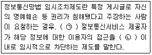
- ㉠-권리침해가 맞으면, ㉡-15일
- ㉠-권리침해가 맞으면, ㉡-30일
- ㉠-권리침해를 판단하기 어려워도, ㉡-15일
- ㉠-권리침해를 판단하기 어려워도, ㉡-30일
(정답률: 37%)
72. 사이버 폭력 피해를 입었을 경우 이를 신고 할 수 있는 사이트는?
- 더치트(www.thecheat.co.kr)
- 금융감독원(www.fss.or.kr)
- 공정거래위원회(www.ftc.go.kr)
- 방송통신심의위원회(www.kocsc.or.kr)
(정답률: 41%)
73. <보기>에서 사이버 범죄의 특징에 해당하는 것만을 모두 고른 것은?
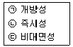
- ㉠
- ㉡
- ㉠, ㉢
- ㉠, ㉡, ㉢
(정답률: 55%)
74. 다음 중 전자상거래 사기를 예방할 수 있는 방법이 아닌 것은?
- 결제대금예치제도에 가입되어 있는지 확인한다.
- 에스크로 제도를 이용할 수 있는 사이트와 거래한다.
- 개인 정보가 유출될 수 있으므로 신용 카드 보다는 현금으로 거래한다.
- 국세청홈페이지(www.nts.go.kr)에서 사업자등록번호를 조회해 본다.
(정답률: 57%)
75. 다음 중 킴벌리 영(Kimberly Young)이 분류한 인터넷 중독의 유형은?
- 정보 검색 중독
- 네트워크 강박증
- 인터넷 게임 중독
- 사이버 거래 중독
(정답률: 40%)
76. 다음 중 일상생활에 지장을 느낄 정도로 지나치게 인터넷에 몰두하고, 인터넷에 접속하지 않으면 불안감을 느끼는 증상을 뜻하는 용어는?
- 네카시즘
- 웨바홀리즘
- 인포데믹스
- 인터넷 디톡스
(정답률: 44%)
77. 다음 중 인터넷 중독의 원인으로 가장 거리가 먼 것은?
- 급속한 사회 변화
- 재미와 호기심
- 대면성
- 익명성
(정답률: 66%)
78. 다음 인터넷 중독 과정 중 가장 마지막 단계에서 나타나는 증상은?
- 오직 접속 상태만을 갈구하게 된다.
- 익명성은 음란성과 결합되어 더욱 발휘된다.
- 게임의 고수로서 그 세계에서 존경을 받게 된다.
- 정기적으로 접속하면서 친구들과 정보를 교류하게 된다.
(정답률: 62%)
79. 다음 문항이 해당하는 K-척도의 하위 요인은?
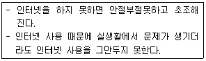
- 금단
- 내성
- 현실 구분 장애
- 가상적 대인관계 지향성
(정답률: 66%)
80. 다음 중 게임선용 진단척도와 문제적 게임이용 진단척도로 구성된 게임행동 종합진단 척도(CSG)를 개발한 기관은?
- 한국정보화진흥원
- 한국인터넷진흥원
- 한국콘텐츠진흥원
- 인터넷중독대응센터
(정답률: 30%)